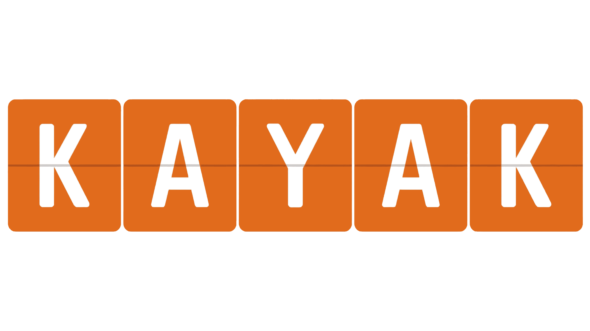
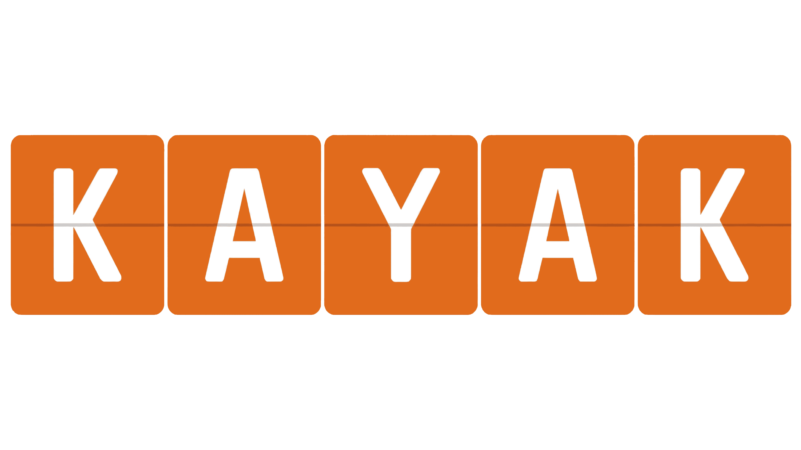
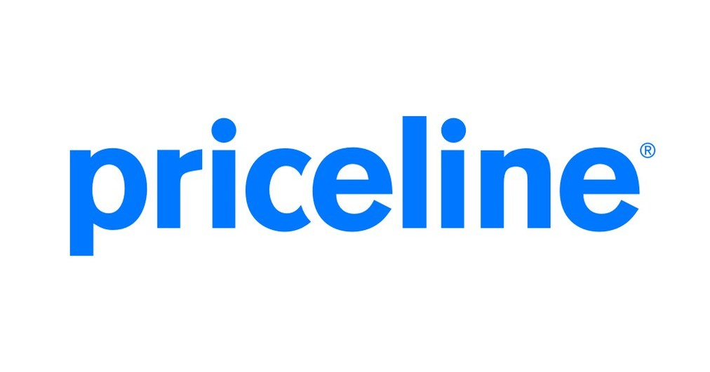
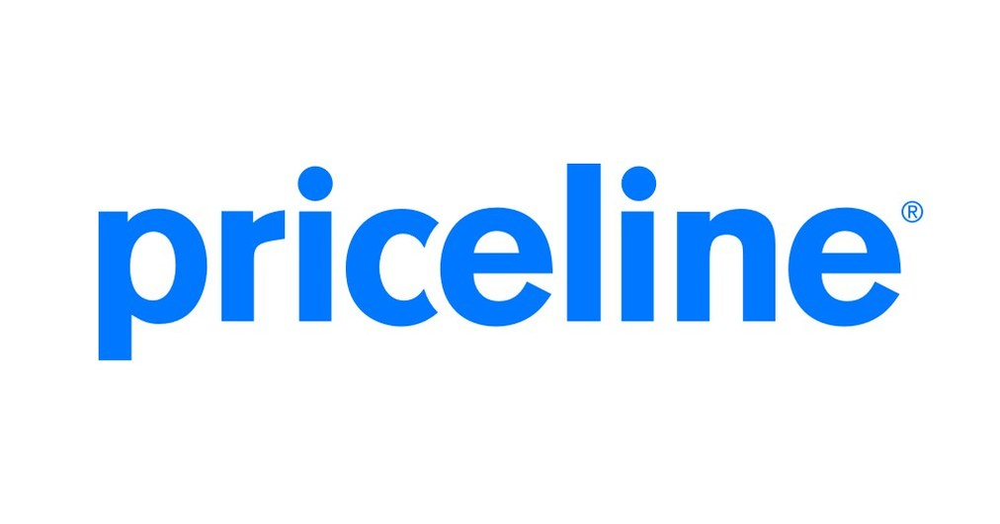

Checking in With Trivago
Diving into Trivago's booking and price comparison - maybe "different" isn't always the answer.
Usability Tester
Skills: usability testing, observation, notetaking, evaluation
Introduction
Booking trips can be stressful for numerous reasons, especially when it comes to finding a place to stay. This became a glaring pain point when I was planning my own trip.
While I was juggling the organization of the trip, I realized how important it is to have a website that makes this planning process easier.
I wanted to see how comfortable and intuitive the website is to use, and whether it is better than its competitors. I evaluated this through my tasks that focus on filtering, content presentation, and redirection
Research Question
Does straying from standard booking site design improve or worsen usability?
Goals and Scope
The goal is to see how comfortable and intuitive the website is to use, and whether it is better than its competitors and I evaluate this through my tasks that focus on filtering, content presentation, and redirection
Research Process
Primary Research
To start my research, I rounded up 6 websites to look through. All of the websites have a purpose in common: to help travelers book the perfect acommodation for their trip.
All 6 websites are listed below.
 

 


All six sites followed a similar layout except Trivago, which deviated in three main areas
- Filtering and Sorting
- Content Presentation
- Booking Redirection
Issue 1: Filtering and Sorting
Trivago’s sorting system varies from standard hotel booking sites. Instead of clear options
like “Lowest
to Highest” or “Highest to Lowest,” Trivago's site uses “Price Only” and “Price
& Recommended” as seen in the left
photo.
The meaning of these labels is unclear — users can’t easily tell which shows the cheapest
or most expensive
listings. Additionally, sponsored hotels sometimes appear at the top, disrupting the order and
creating
inconsistency.


Issue 2: Content Presentation and Layout
Unlike most booking sites that open hotel details in a new tab, Trivago displays information in a dropdown section on the same page.It results in a cluttered and overwhelming layout.
The dropdown shares a screen with a map panel. I had to scroll extensively to view amenities, pricing, and reviews which was too overstimulating for me. Additionally, Trivago disables right-clicking to open listings in new tabs, so I wasn't able to do side by side comparisons.
Issue 3: Redirection
The third issue I noticed involves Trivago’s redirection process when booking. Unlike other sites, Trivago lists deals from multiple booking platforms, highlighting the cheapest option in green. While this comparison feature seems helpful, it becomes confusing once users click “View Deal.” Instead of completing the booking on Trivago, they are redirected to an external site, which can feel unexpected and disrupt the user flow.
Because users often overlook the small text showing the third-party site, this redirection may seem misleading. It also introduces inconsistencies in prices. They may differ due to hidden fees or room variations not reflected on Trivago’s page. This lack of transparency weakens trust and makes the experience feel less seamless.
Overall, the redirection process can be jarring and confusing for users, potentially discouraging them from using Trivago again.
[After revisiting the site a year later, I noticed that Trivago has introduced a new feature called Trivago Book & Go which allows users to book directly on the site.]
User Testing
To confirm the issues I noticed, I conducted usability tests with three undergraduate students from Indiana University.
The participants majored in Marketing, Data Science, and Computer Science. Each participant had prior experience using hotel booking sites but not Trivago specifically. Tests ranged from 9 to 15 minutes
Tasks and Findings
Task 1: Sorting and Filtering
All three participants were asked to find the cheapest hotel in their destination of choice. After that, they were to find the hotel that was still within their budget
All three users located the price filter easily but struggled with Trivago’s unclear sorting categories. “Price & Recommended” caused confusion, as listings did not appear in the expected order of hight price to low price. None of the participants found a “High–Low” sorting option
"It would have been nice if it could consider the recommended thing but also still keep the listings properly sorted by price" - User 1
Task 2: Content Layout
The next task was to pick a hotel that they liked and to find information on the amenities and photos
When exploring hotel listings, users disliked the dropdown format that presented all information on the same page. They found it cluttered, hard to compare, and visually overwhelming. Two users tried to open details in a new tab but were unable to, which frustrated them.
“More modern websites have less details at first until you actually look into it" - User 2
"Would one say that this quite a lot? Yes."- User 3
Task 3: Redirection
The third task was that the participants had to book the hotel of their choosing through trivago
When booking, one user didn’t realize clicking “View Deal” would redirect them to a third-party site. Others noticed but still found the redirection unnecessary. The pricing felt inconsistent and misleading as different different prices would appear on the redirected pages.
"If it’s just going to take me to Hotels.com, why couldn’t I just go to Hotel.com and search for a hotel in the first place" - User 2
Recommendations
After conducting the user tests, I gathered the insights and used them to suggest changes to the Trivago website to ensure better user interaction and ease of use.
• Rename sorting categories to “Low–High” and add a“High–Low” option.
• Open hotel listings in a new tab to reduce clutter and make comparisons easier.
• Enhance visibility of the redirection message and clearly label external links.
• Consider allowing users to book directly through Trivago for a smoother process.
Conclusion
While Trivago's website is not unusable, I do believe that straying from typical design choices has hurt Trivago. My participants and I unanimously agreed that we would never choose Trivago.com to browse for and book a hotel over site like Hotels.com or Expedia.com. However, with changes to the filters and sort features, content presentation strategies, and streamlining the booking process to avoid redirection, Trivago can upgrade to a cleaner, more efficient version of themselves that users will go to as their default hotel booking website.